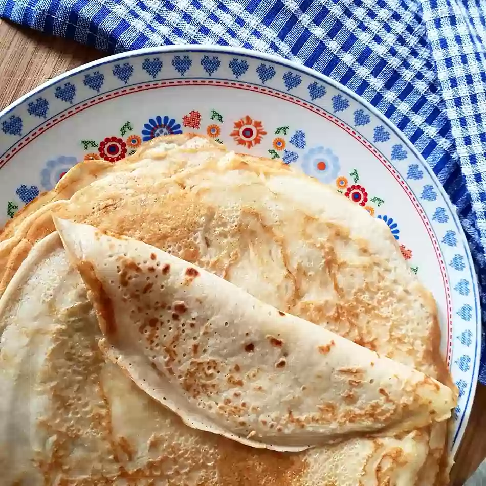
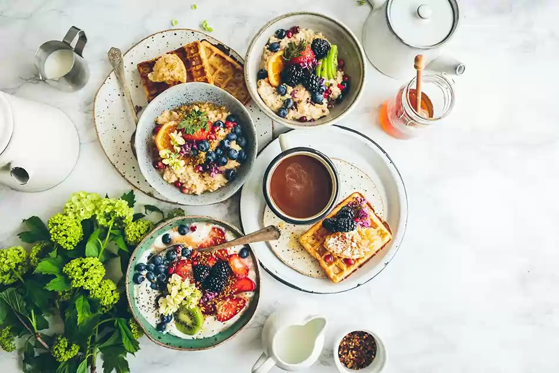
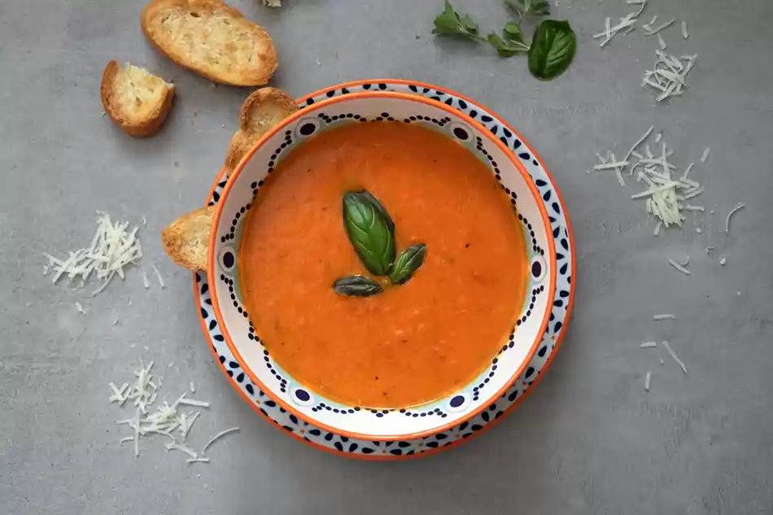
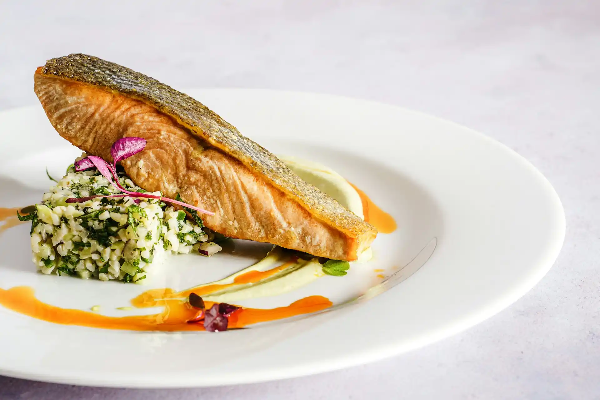
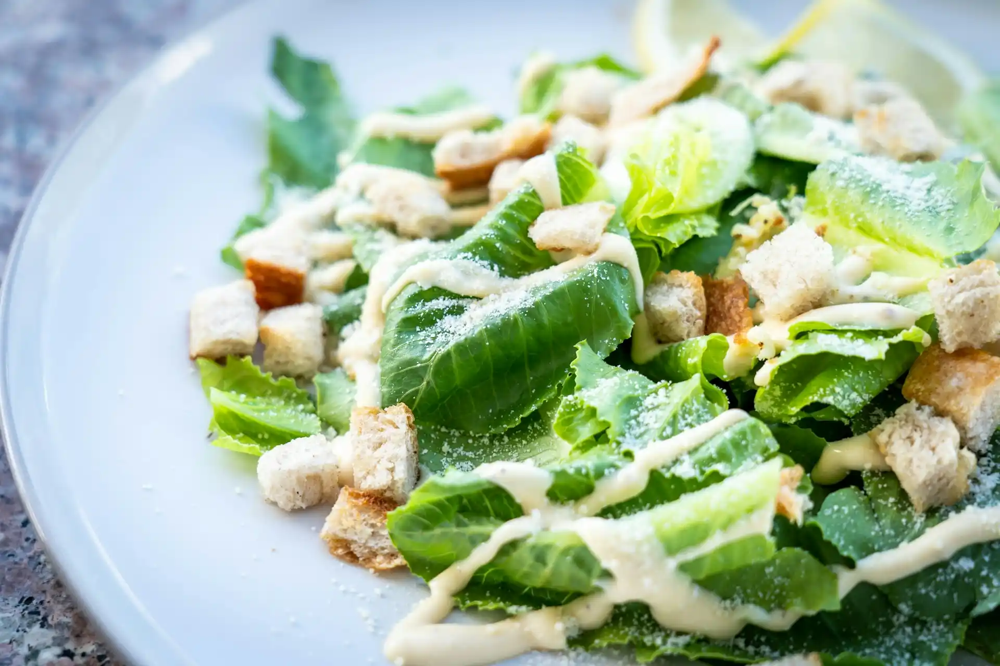
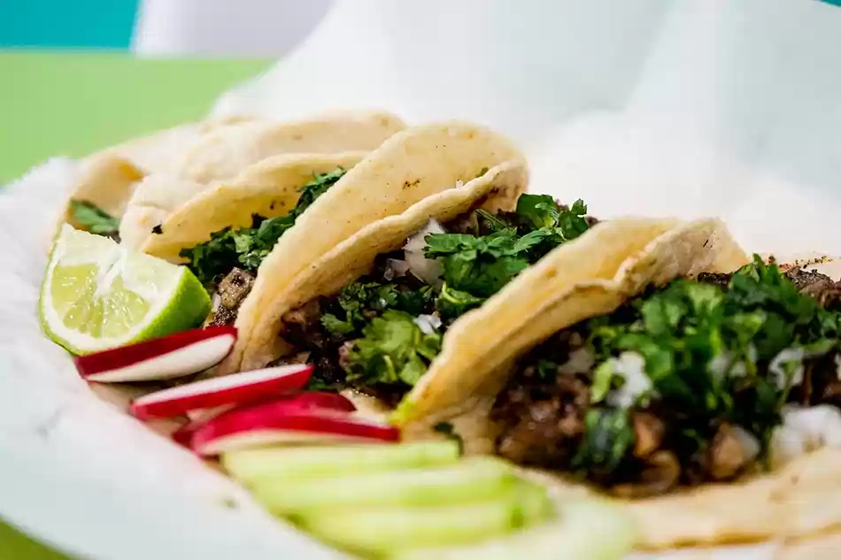
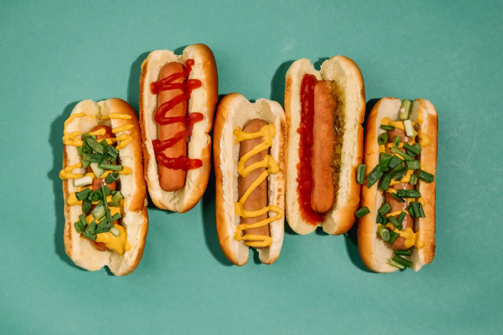

Pannkakor
Traditionella, tunna och goda

Upptäck goda och lättlagade recept som passar både vardag och helg

Traditionella, tunna och goda

Mustig soppa på grillade tomater

Med grönsaker och ris

Med grillad kyckling och krutonger

Med koriander och lime

Korv med bröd och toppings